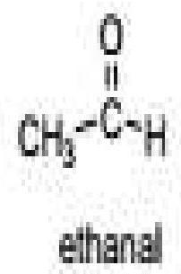

UNIT 10: CARBONYL COMPOUNDS
Unit objectives
By the end of the unit, the learner should be able to:
- Identify structures of carbonyl compounds and their reactions
- State the methods of preparing carbonyl compounds
10.1 Definition of Carbonyl
Carbonyl compounds are molecules containing the carbonyl group, $\mathrm{C}=\mathrm{O}$. They include the carboxylic acids, aldehydes, ketones and carboxylic acid derivatives (e.g. esters, amides). The simplest carbonyl compounds are aldehydes and ketones. A ketone has two alkyl (aryl) groups bonded to the carbonyl carbon whereas an aldehyde has one alkyl (aryl) group and one hydrogen atom bonded to the carbonyl carbon.
[R]C=O[R]C([R'])=ONB: An alkyl group is derived from an alkane i.e. it is an alkane with a hydrogen atom missing from its chain. The smallest alkyl group is methyl ($\mathrm{CH}_{3}$) group derived from methane ($\mathrm{CH}_{4}$). An aryl group is derived from benzene which contains an aromatic ring. A hydrogen atom is missing from the compound allowing it to get attached to a carbon chain. For the purposes of this course, we shall ignore the aryl group.
Ketones are named by replacing the -e ending of the alkyl name with -one (alkane to alkanone).
E.g.
CCC(C)=Oold IUPAC names in blue: new IUPAC names in green:
2-butanone
butan-2-one
CC(C)C(=O)C(C)C2,4-dimethyl-3-pentanone
2,4-dimethylpentan-3-one
Aldehydes has to be at the end of a chain, and while naming, it is carbon number 1. They are named by replacing -e with -al (alkane to alkanal).
$\mathrm{H}_{3} \mathrm{C}-\mathrm{CH}_{2}-\mathrm{CH}=\mathrm{CH}-\mathrm{CHO}$
pent-2-enal
E.g.
The wide spread usage of carbonyl compounds means many common names are entrenched in their everyday use. E.g. acetone for propanone, formaldehyde for methanal.
Three of the four bases which comprise DNA i.e. guanine, thymine and cytosine contain carbonyl groups.
Properties of aldehydes and ketones
Physical properties
- They are polar molecules because the $\mathrm{C}=\mathrm{O}$ bond has a dipole moment (there is a separation of charge).
- They have lower boiling points than alcohols of similar molecular weights but higher than those of alkenes of similar molecular weight.
- They have considerable solubility in water.
Chemical properties
The reactions of the carbonyl group fall into three main categories
- Reactions with acids
- Addition reactions
- Oxidation reactions
Preparation of aldehydes and ketones
Ketones and aldehydes can be prepared through many reactions. Below are examples of some of the ways to prepare aldehydes and ketones.
Hydration of alkynes
This can be achieved with Markovnikov (acid and mercury (II) catalyzed reaction)
From alcohols
Secondary alcohols are readily oxidized to ketones by $\mathrm{KMnO}_{4}$. Aldehydes are made from the oxidation of primary alcohols.
In Biochemistry you'll learn that the conversion of ethanol to acetaldehyde is the 1st step in the liver's processing of ingested alcohol. Aldehydes are chemically reactive. E.g. acetaldehyde can react with proteins of the body and is fairly toxic accounting for some of the side effects of excessive drinking.